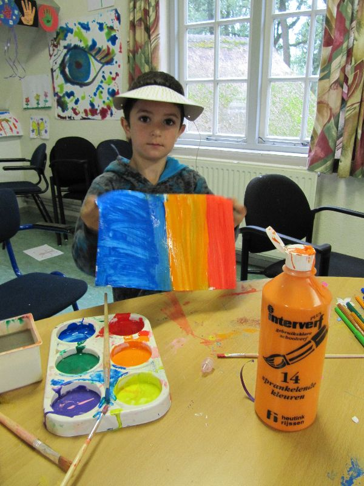
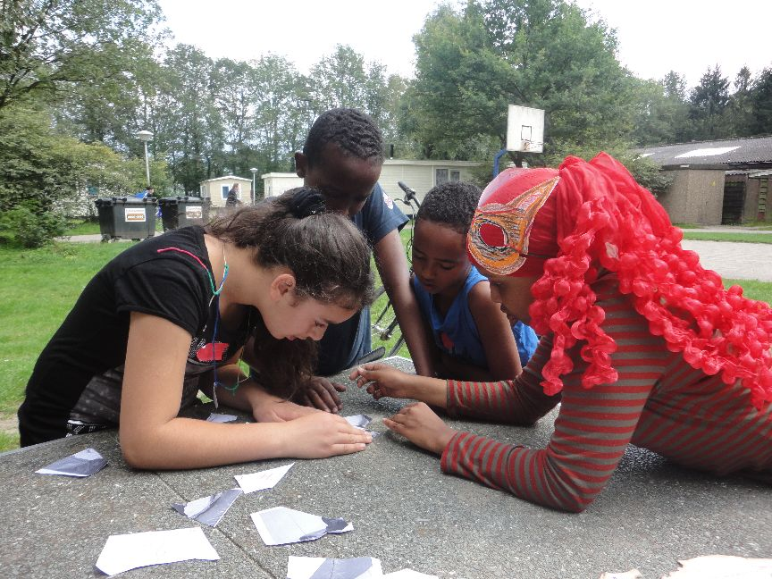

Projecten
Overig
Buitenland in Nederland
 By Lokien Holleman, Markelo, 2012
By Lokien Holleman, Markelo, 2012
Ik rijd over een landweg met rechts en links bos. Ik passeer een dorpje en sla weer een landweg op; links en rechts weiland. Bij de rotonde naar rechts en weer naar rechts, voorbij de slagboom. Ik ben hier al vele malen geweest, maar ieder jaar als ik hier terug kom, kost het me moeite te realiseren dat ik in Nederland ben. Na de slagboom en het aanmelden bij de receptie neemt dit gevoel alleen maar toe. Naast een internationale groep vrijwilligers, tref ik namelijk ook bewoners vanuit de hele wereld. Allemaal hebben ze hun eigen verhaal en spreken ze hun eigen taal, maar allemaal wonen en leven ze ook met elkaar samen.
Ik ben in het Asielzoekerscentrum Markelo. Een van de plekken waar Stichting VIA al jaren lang een zomerproject organiseert. Ik doe al enkele jaren de coördinatie van dit project en ik altijd enkele dagen langs om me op te laten nemen in de groep en te laten bespringen door de hordes kinderen, die onmiddellijk op me af komen rennen.
Hier een verslag van het project in 2011. Het project is mede mogelijk gemaakt door Stichting Het Maagdenhuis.
Doelstelling
Het AZC Markelo project van Stichting VIA heeft de volgende doelstellingen:
• Door middel van het organiseren van activiteiten voor kinderen/jongeren een positieve impuls geven aan de asielzoekers die vaak al enige jaren zonder veel vooruitzichten in het AZC leven.
• Door middel van samenwerking en gemeenschappelijke activiteiten de relatie tussen de inwoners van het AZC en omwonenden verbeteren.
• De deelnemers aan het project meer inzicht geven in de asielzoekersproblematiek en conflicten in de gebieden waar de asielzoekers vandaan komen.
• Het bevorderen van wederzijds begrip tussen mensen van verschillende achtergronden, culturen en nationaliteiten door middel van samen leven en werken in een groep.
Vrijwilligers
Dit jaar wilden wij specifiek selecteren op leeftijd, om ook wat oudere vrijwilligers in het project te hebben. Echter, de allereerste aanmeldingen kwamen van relatief jonge vrouwen, met een zeer overtuigende motivatiebrief. Wij hebben toch besloten om deze vrijwillgers te accepteren, omdat we ervaring en motivatie belangrijker vinden dan leeftijd.
Omdat een aantal vrijwilligers kort voor aanvang van het project nog geen visa had, besloten wij om een aantal extra vrijwilligers te accepteren. Uiteindelijk ontving iedereen op de valreep toch een visa, waardoor de groep groter werd dan geplaned.
Dit jaar was voor het eerst het aantal mannen en vrouwen evenredig verdeeld.
Dit waren de vrijwilligers:
- Radica Hura, V, 22, Servie
- Zofia Baldyga, V, 23, Polen
- Miriam Marzkova, V, 20, Tjechie
- Aneta Dedkova, V, 19, Tjechie
- Melissa Rousset, V, 23, Frankrijk (vanwege ziekte maar een deel van het project)
- Juan Antonio Pallero Castillo, M, 24, Spanje
- Alessandro Renzi, M, 21, Italie
- Anton Mykhalskyj, M, 27, Ukraine
- Mahmoud Deep, M, 26, Jordanie
- Ievgenii Grebennikov, M, 20, Ukraine
- Matsuoka Seiji, M, 22, Japan
- Khaled Kaddal, M, 24, Egypte (alleen laatste week, als onderdeel van een langer programma in Europa)
En dit de begeleiders:
- Lucia Cemova, V, 21, Slovakia – volledige kampbegeleidster
- Rigas (gedurende deel van het project). Rigas was actief bij onze SCI tak in Griekenland en nadat hij enkele jaren geleden naar Nederland is verhuisd, is hij vrijwilligers bij ons geworden. Hij heeft reeds diverse projecten georganiseerd en begeleid, zowel in Griekenland als in Nederland
- Suzanna (gedurende deel van het project). Susanna was sinds twee jaar actief bij ons en vorig jaar heeft zij haar eerste werkkamp begeleid. Zij is in een korte tijd een van onze kern-vrijwilligers geworden
- Ikzelf (Lokien Holleman) – gedurende deel van het project. Ik ben sinds 12 jaar actief bij VIA en heb reeds vele projecten georganiseerd en bezocht.
Verloop van het project
De groep
De groep was goed op elkaar ingespeeld. Enkele vrijwilligers hebben moeite met de Engelse taal. Maar er zijn andere vrijwilligers die voor elkaar kunnen vertalen in aanverwante talen. De energie en capaciteit van de individuen ligt sterk op een verschillend niveau, maar dat wordt in de groep geaccepteerd. Sommigen nemen initiatief, doen creatieve dingen, anderen zijn bijvoorbeeld met name actief bij het sporten. Het is een samenwerking van uiteenlopende types individuen, waarbij de mensen in hun waarde worden gelaten. Zo wilde de Japanse vrijwilliger in de weekenden graag vrienden opzoeken. De Jordaanse vrijwilliger zat midden in de Ramadan, waardoor zijn levensritme wat afweek. Sommige vrijwilligers bleven graag tot laat op, anderen wilden vroeg slapen. Dit was enigszinds lastig, in verband met de accomodatie in een grote ruimte. In de evaluatie werd echter de accomodatie zeer goed gewaardeerd.
Er waren goede afspraken gemaakt over boodschappen doen, koken, opruimen. Iedereen nam zijn verantwoordelijkheden hierin.
Ik had het gevoel dat het soms een beetje ontbrak aan frisse ideeen voor activiteiten. Misschien werd dat veroorzaakt door de wat moeizame besprekingen met personen die de taal niet goed beheersten. Maar uiteindelijk waren de activiteiten altijd sucessvol (zie activiteiten).
De begeleiding
Het was voor Lucia niet makkelijk, omdat ze zo kort van te voren deze taak had geaccepteerd, maar ze deed het heel goed. Ze vormde deel van de groep en initieerde meetings om plannen en afspraken te maken.
Het was wel zeer wenselijk dat er meestal VIA vrijwilligers aanwezig waren. In de evaluatie werd gezegd dat de vrijwilligers liever meer Nederlands sprekende begeleiders hadden gehad. Dit gaven ze ook aan tijdens het project. Echter, mijn eigen ervaring was anders. Omdat het AZC inmiddels met name gezinnen huisvest die nog maar kort in Nederland zijn, spreken de meeste kinderen geen Nederlands. Als ik bij een activiteit aanwezig was, sprak in met name met handen en voeten of een paar woordjes Arabisch, afhankelijk van de herkomst. Veel mensen in het kamp spraken Russisch en we hadden vier vrijwilligers die ook Russisch konden spreken. Twee Arabisch sprekende vrijwilligers vonden ook veel aansluiting, zowel bij de kinderen als de overige bewonders.
Het plan om ervaren bewoners te vragen om mee te helpen, is compleet mislukt. Door het enthousiasme van het COA, zaten er op de eerste avond opeens rond de 10 vrijwilligers in plaats van de gevraagde 1 of 2. Dat is veel te veel om op te nemen in de groep. Bovendien bleken enkelen jongens van 16 te zijn, die met name zaten te chiebelen. Het was eerder een extra taak om hen te betrekken, dan een hulp. Dit is dus niet echt van de grond gekomen. Uiteindelijk bleven er wel twee meiden over die regelmatig meehielpen bij de activiteiten. Ik heb dit inmiddels met het COA geevalueerd.
De activiteiten
Er waren dagelijks twee sessies van activiteiten. De eerste was vaak een keuze tussen knutselen of sporten. Hiervoor was niet veel voorbereiding nodig. In de middag werd dan een andere activiteit georganiseerd, bijvoorbeeld een spel, competitie, spookhuis, etc. Een van de hoogtepunten was het schatzoeken.
Op de aankomstdag was Stichting De Vrolijkheid er met Gollem. De dag erna organiseerden wij een afscheid van Gollem.
Studiethema
Al jaren ben ik niet tevreden over de uitwerking van het studiethema, maar het lukt mij steeds niet dit te verbeteren, wat ik ook probeer. Ook dit jaar liet het te wensen over. Dit bleek ook uit de evaluaties. Ik had geregeld dat iemand van het COA iets zou komen vertellen, maar op die avond zaten ook alle tien de vrijwilligers uit het AZC er plotseling bij en dat maakte het lastig praten. Omdat dit was mislukt, vroeg ik de vrijwilligers of ze nog een nieuwe sessie wilden en dat wilden ze graag. Maar toen ik het georganiseerd had, kwamen diverse vrijwilligers niet opdagen, omdat ze naar het dorp waren om dingen te kopen. Zelf kan ik ook best het een en ander vertellen, maar als ik dan ging zitten voor een sessie, kwamen er nauwelijks vragen. Ik ga er dan van uit dat de interesse er niet echt is. Daarom was ik verbaasd over de evaluatie.
Ook probeer ik mensen altijd in contact te brengen met diverse bewoners die ik ken en waarvan ik weet dat ze graag hun verhaal willen vertellen. Het is heel erg afhankelijk van de vrijwilligers hoe zij dit oppakken. Sommige vrijwilligers werden iedere avond in een andere caravan uitgenodigd en kenden aan het eind van het project bijna alle bewoners, hun achtergrond, de problematiek, hun toekomstdromen. Andere vrijwilligers gaven aan dat ze nauwelijks contact hadden gehad met bewoners. Ik moet hier in het vervolg nog meer op letten, maar ik vind het tegelijkertijd ook de eigen verantwoordelijkheid van de vrijwilligers om wat initiatief te nemen. Je kunt mensen ook niet dwingen om met elkaar te praten.
Evaluatie
Naast de opvallend hoge score voor de accomodatie en de lage score voor het studiethema, viel vooral op dat de vrijwilligers erg positief verrast waren over de groep en hoe leuk het was mensen uit verschillende landen te ontmoeten en blij waren dat het werken met de kinderen minder moeilijk was dan ze hadden gevreesd.
Khaled merke op dat we eigenlijk ook de kinderen zouden moeten vragen om de groep te evalueren. Hier was helaas geen tijd meer voor. Ook vind ik het lastig, omdat ik uit ervaring weet dat kinderen ieder jaar tegen mij zeggen dat de VIA groep van het vorige jaar leuker was. Waarschijnlijk is dat iets dat zich in hun herinneringen nestelt en vervormt. Want volgend jaar zeggen ze waarschijnlijk hetzelfde over dit jaar. En het wordt echt niet ieder jaar minder leuk!!
Het COA was zeer enthousiast over de groep van dit jaar. ‘Ze zijn voortdurend bezig en de kinderen vinden het fantastisch’ gaven zij tijdens het project door. Ze waren ook positief over Lucia als begeleidster.
Knutselen – bij regen binnen, bij mooi weer buiten

De sport teams ;-)
Spelletjes (onder andere schatzoeken)

Muziek en dans